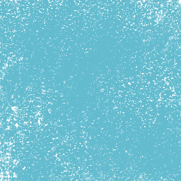
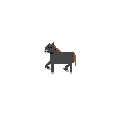
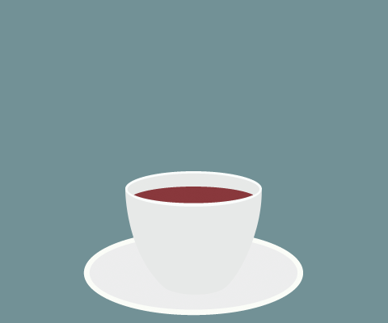
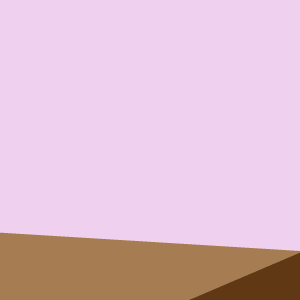
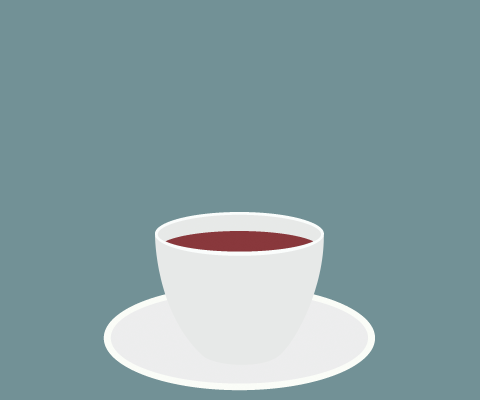
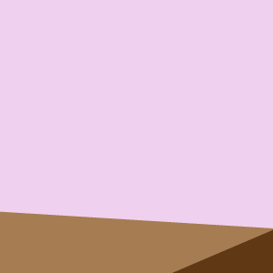
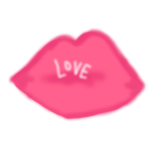
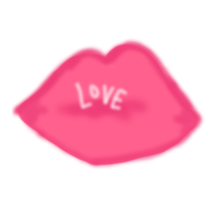
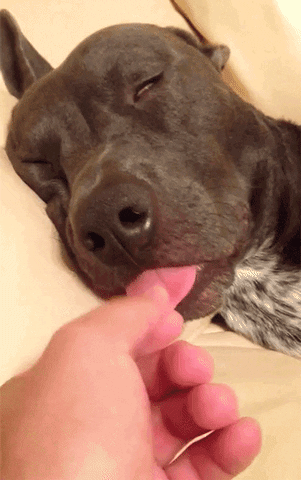
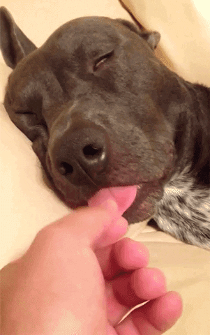

A Day in the Life of a College Student
Every ,
I wake up and get off my .
I don't always have time to a shower,
but I always make sure to my hair.
Once that's done I get some ,
and then it's off to my first Class.
I often get caught  in class.
No one likes it when the gives a surprise .
My second class is
in class.
No one likes it when the gives a surprise .
My second class is  Theory.
Dr. is incredibly ,
but I never
Theory.
Dr. is incredibly ,
but I never  her because of her thick .
Her ,
however, are really .
After lunch, I have no more
her because of her thick .
Her ,
however, are really .
After lunch, I have no more  and I`m free to
and I`m free to  my friends. Before I go to bed I  a little bit.
my friends. Before I go to bed I  a little bit.
 
  .
.
Student Gifs
- 1 Time Span - Aviela
- 2 Noun - Will
- 3 Verb - Clare
- 4 Verb - Mika
- 5 Noun Plural or Singular - Iven
- 6 Noun - Ava
- 7 Verb ending in 'ing' - Aviela
- 8 Occupation - Will
- 9 Noun - Clare
- 10 Noun - Mika
- 11 Famous Person - Iven
- 12 Adjective - Ava
- 13 Verb - Aviela
- 14 Noun - Mika
- 15 Noun Plural - Clare
- 16 Adjective - Iven
- 17 Noun Plural - Ava
- 18 Verb - Will
- 19 Preposition - Clare
- 20 Verb - Aviela
- 21 Adjective - Will
- 22 Noun - Iven
- 23 Verb - Ava
- 24 Adjective - Mika